No Lab Digital existem muitos circuitos pneumáticos, e abaixo estarão alguns deles listados em ordem e como funcionam.
Cilindro Simples Ação - Comando Direto
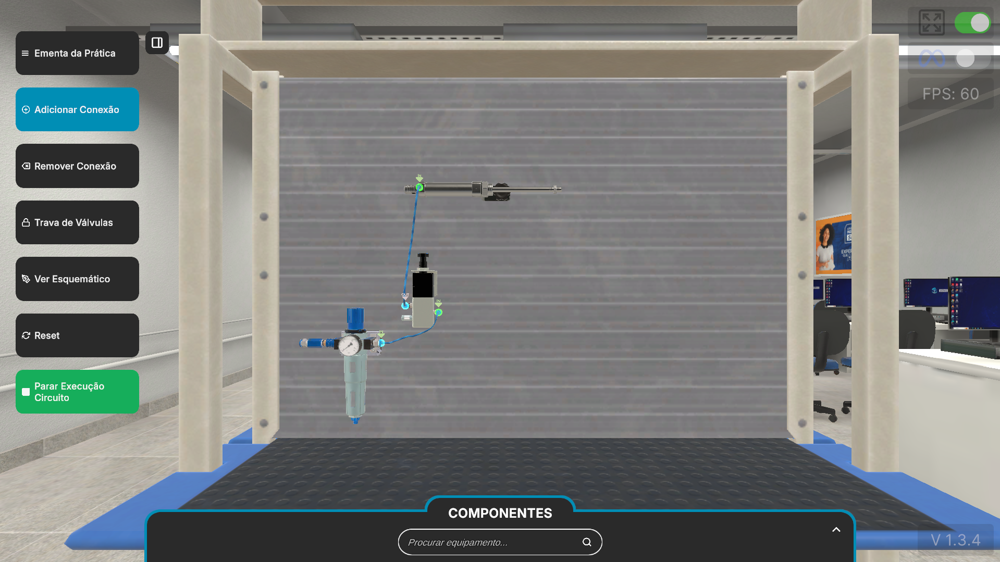
Cilindro Simples Ação - Comando Indireto (Piloto Simples)
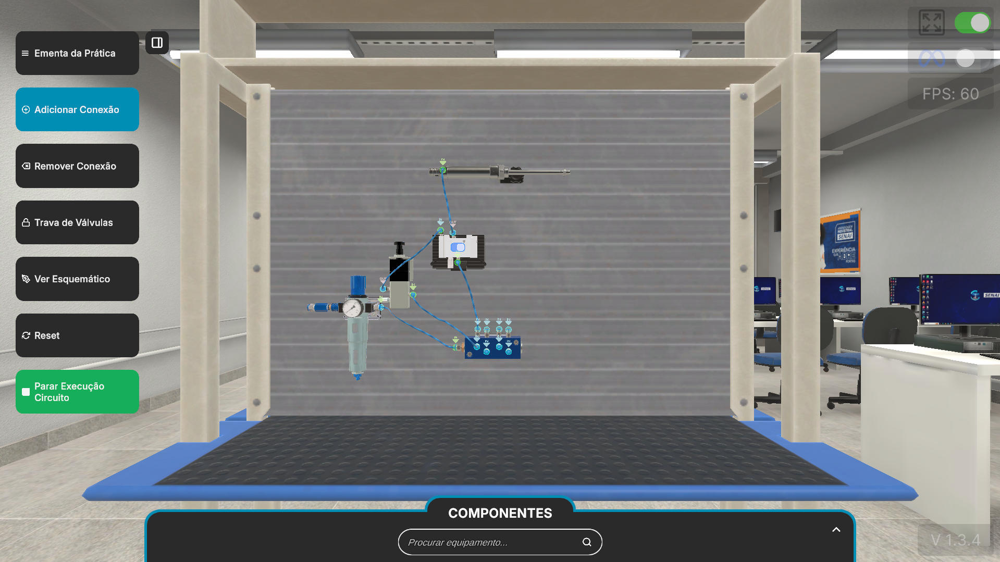
Cilindro Simples ação - Comando com Duplo Piloto
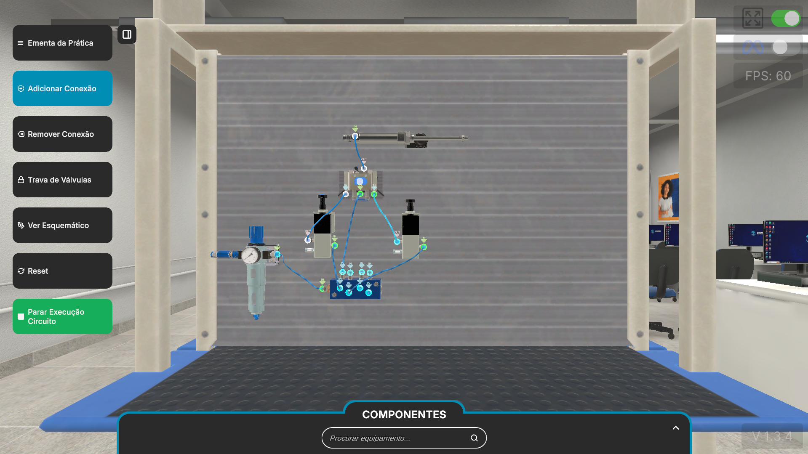
Cilindro Simples Ação - Comando de Dois Pontos
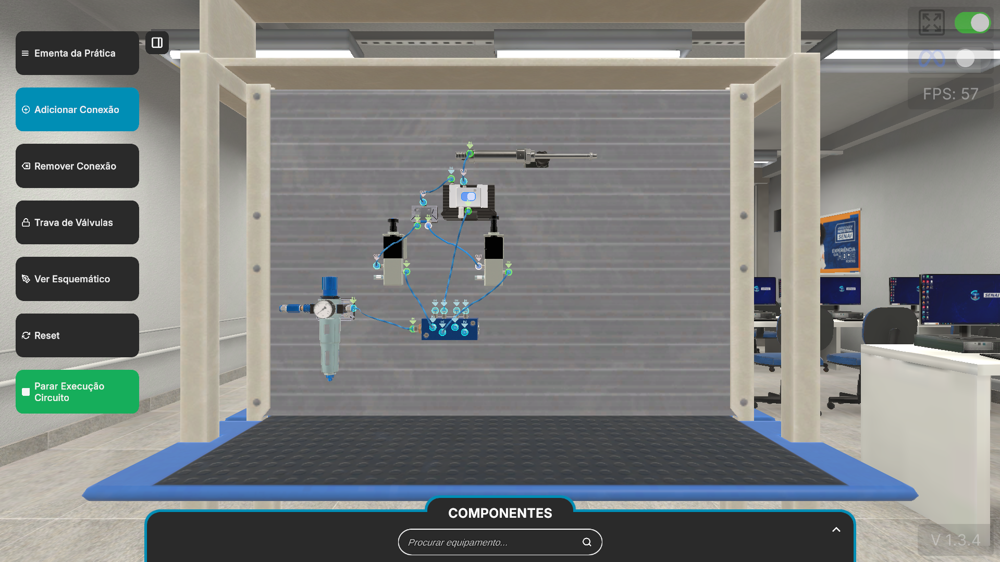
Cilindro Simples Ação - Acionamento Simulâneo (Bimanual)
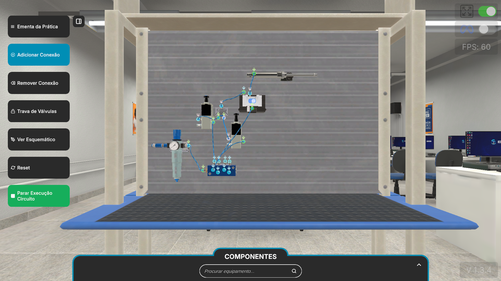
Cilindro Dupla Ação - Comando Direto
Cilindro Dupla Ação - Paradas Intermediárias
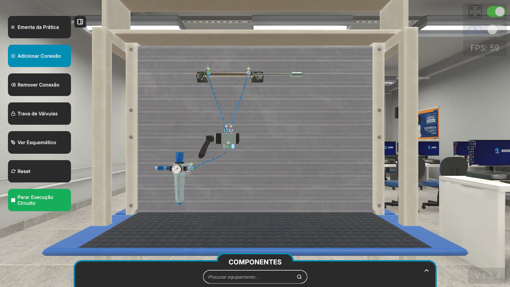
CCilindro Dupla Ação - Comando Indireto (Piloto Simples)
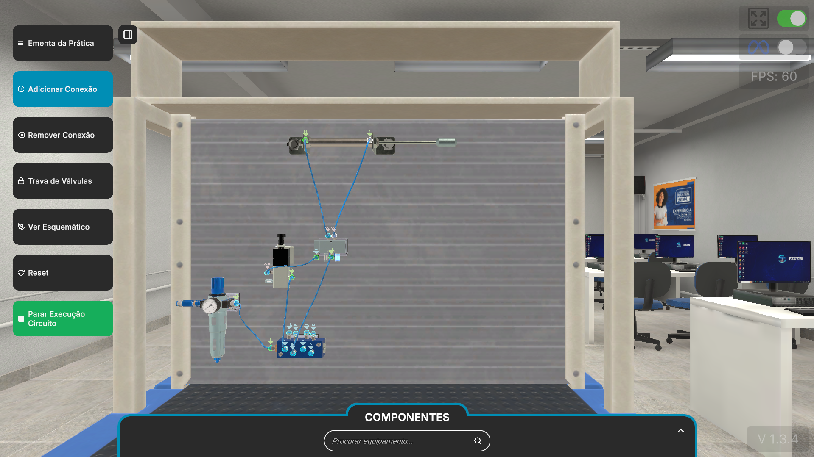
Cilindro Dupla Ação - Duplo Piloto com Controle de Velocidade
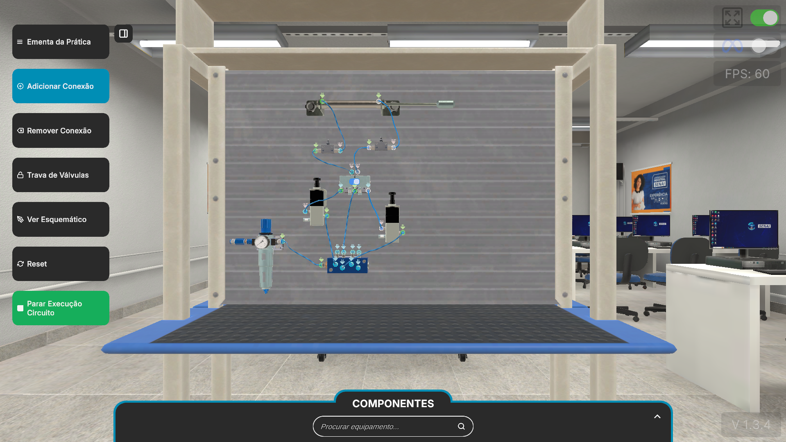
Cilindro Dupla Ação - Velocidade Controlada e Retorno Rápido
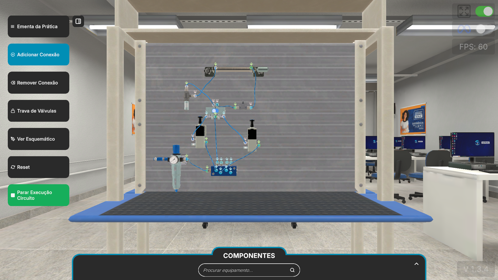
Cilindro Dupla Ação - Controle de Velocidade com Fim de Curso
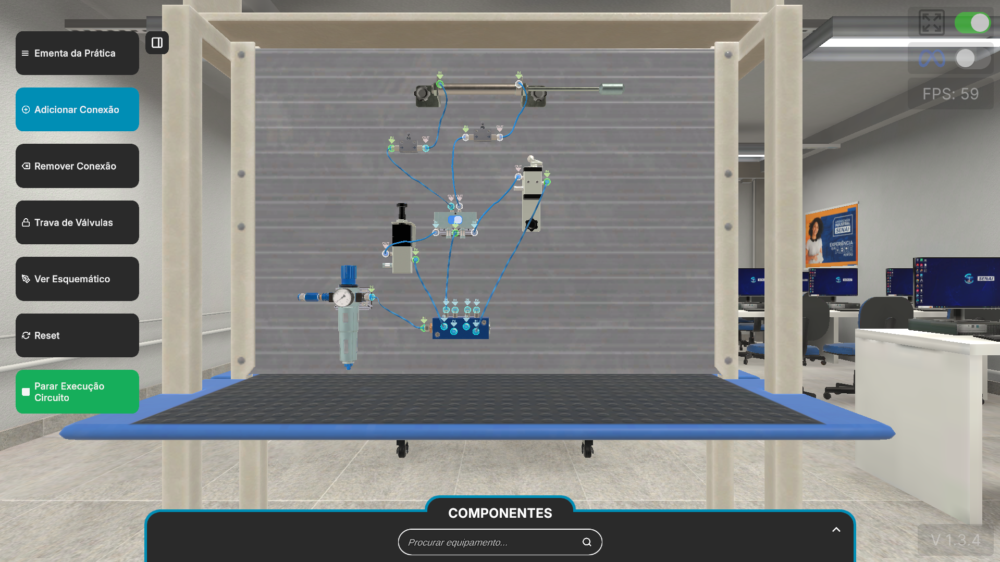
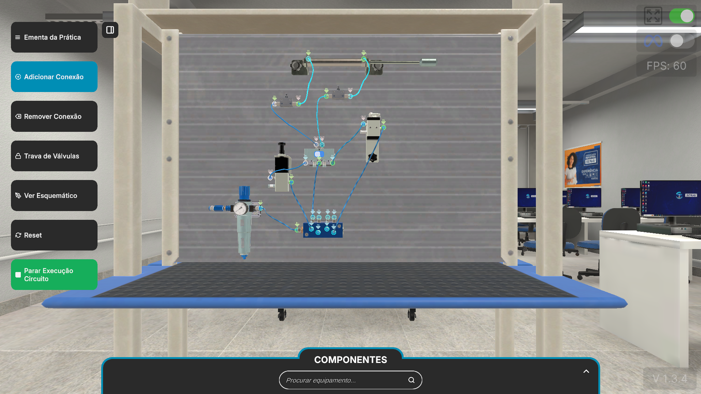
Cilindro Dupla Ação - Controle de Velocidade com Ciclo Contínuo
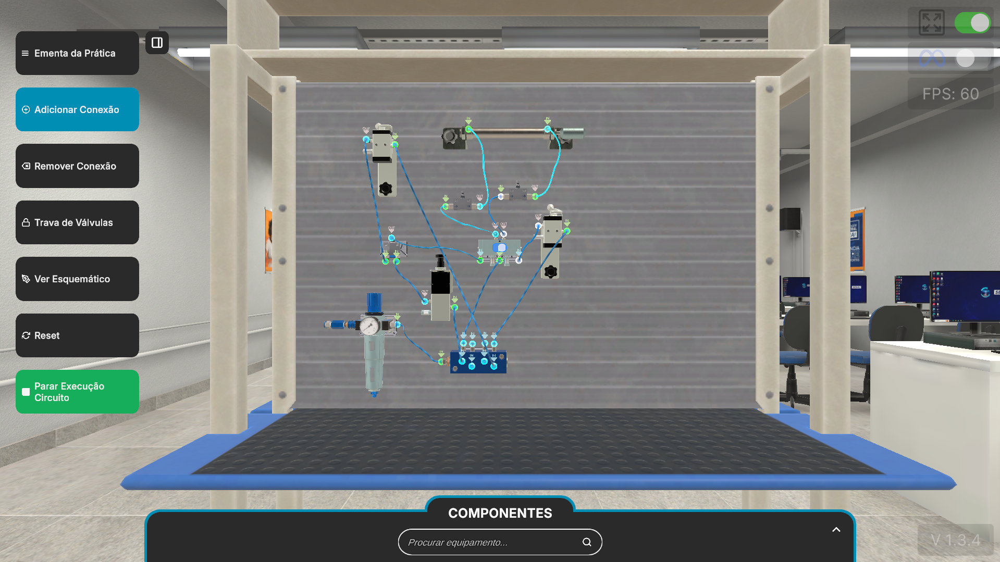
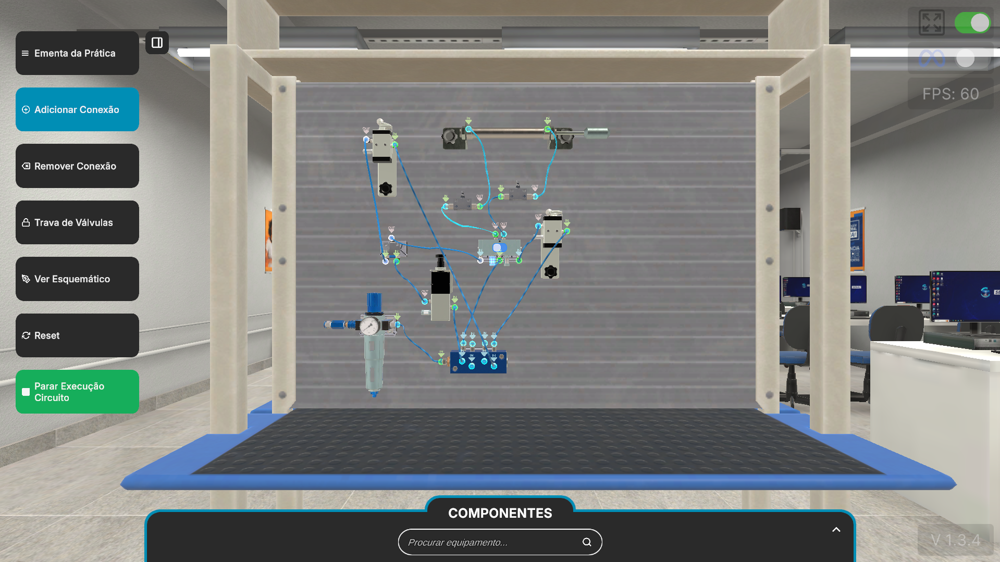
Cilindro Dupla Ação - Avanço com Memória e Retorno por Botão
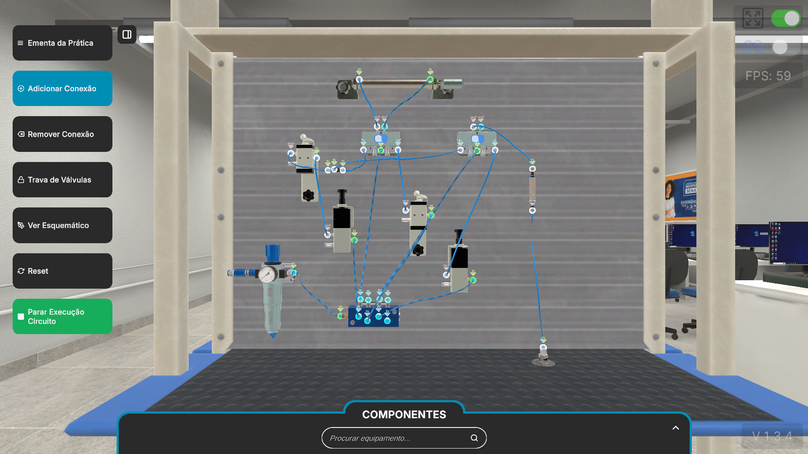